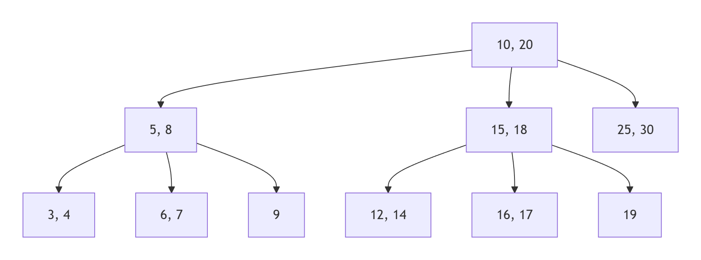
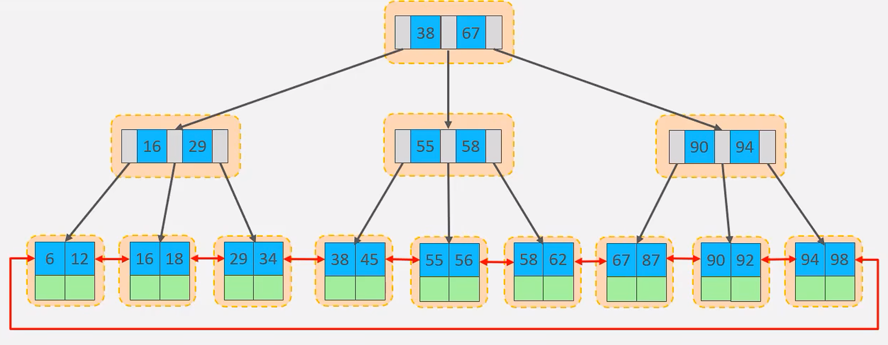
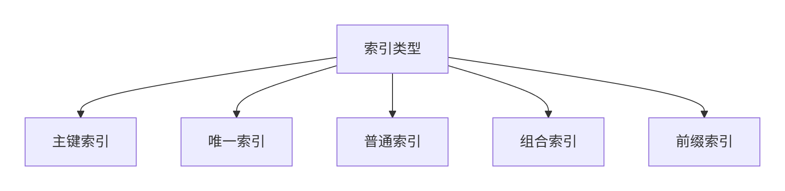
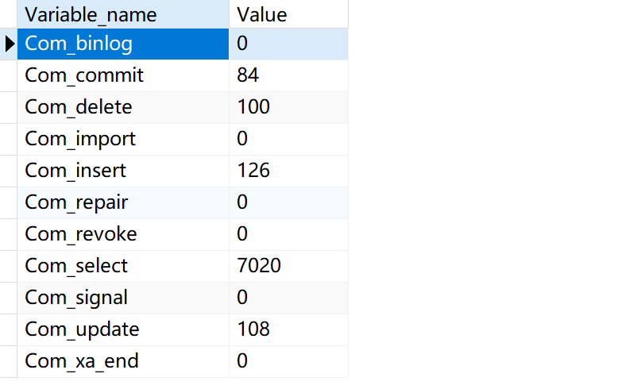
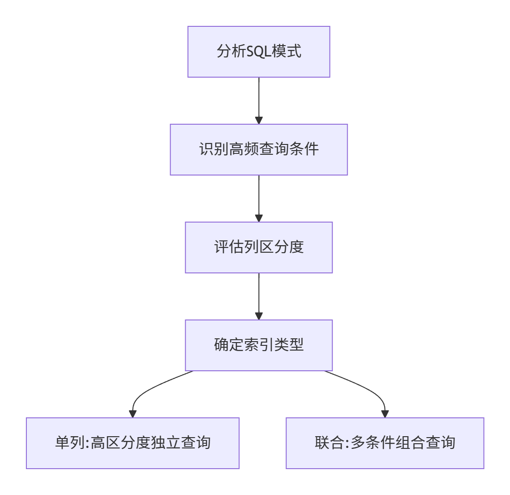

索引
作用
- 加速查询：类似书籍目录，减少全表扫描
- 排序优化：避免filesort临时排序
- 约束保证：唯一索引保证数据唯一性
| 优点 | 缺点 |
|---|---|
| 提高查询速度 | 降低写操作性能 |
| 保证数据唯一性 | 占用额外存储空间 |
| 加速表连接 | 增加维护成本 |
索引结构¶
| 索引类型 | 存储结构 | 适用场景 | 示例 |
|---|---|---|---|
| B+ Tree | 平衡多路搜索树 | 精确匹配/范围查询 | 主键索引 |
| Hash | 哈希表 | 精确匹配(不支持范围) | Memory引擎 |
| Full-Text | 倒排索引 | 文本搜索 | 文章内容搜索 |
| R-Tree | 空间索引 | GIS数据 | 地图坐标 |
B树
B树的诞生是为了解决传统二叉查找树在磁盘存储环境下的性能问题：二叉查找树的高度较高（例如百万数据需要约20层），每次查找需要多次磁盘I/O，效率低下。
特点：
- 多路平衡：每个节点有多个子节点（通常数百个）
- 完全平衡：所有叶子节点位于同一层
- 节点存储：键值+数据指针（所有节点都存储数据）

B+树
- 数据集中存储：仅叶子节点存储数据记录
- 叶子节点链表：所有叶子节点通过指针顺序链接
- 键值冗余存储：非叶子节点的键值会在叶子节点再次出现

✅为什么使用B+树作为索引结构
- 磁盘I/O最小化
- B+树的"矮胖"特性（通常3-4层就能存储亿级数据）大幅减少磁盘访问次数
- 示例：千万级数据查询只需3次I/O（根节点常驻内存，实际2次磁盘I/O）
- 页对齐优化
- B+树节点大小设计为磁盘页大小的整数倍（InnoDB默认16KB）
- 完全匹配磁盘的块存储特性，避免读取碎片数据
- 范围查询高效
- 叶子节点通过链表连接，支持顺序遍历
- 范围查询无需回到上层节点，直接顺序扫描叶子节点
- B树 vs B+树
- B树所有节点存储数据，导致节点较大，树高增加
- B+树仅叶子节点存储数据，非叶子节点更小，树更矮
| 数据结构 | 优点 | 缺点 | 适用场景 |
|---|---|---|---|
| 哈希表 | O(1)查询 | 无法范围查询 | 缓存/KV存储 |
| 红黑树/二叉树 | 内存操作快 | 树高较大 | 内存索引 |
| B+树 | 综合性能最佳 | 写入成本较高 | 通用OLTP |
索引分类¶
按数据结构：
Tip
见上一节“索引结构”分类
按存储形式：
| 名称 | 含义 | 特点 |
|---|---|---|
| 聚簇索引 | 数据与索引存储在一起 | 有且仅有一个 |
| 二级索引 | 叶子节点存储主键值，需要回表查询 | 没有或多个 |
聚簇索引选取规则
- 存在主键，主键索引作为聚簇索引
- 不存在主键，使用第一个唯一索引作为聚簇索引
- 无主键和唯一索引，自动生成rowid作为隐藏的聚簇索引
1.聚簇索引
- 特点：
- InnoDB主键索引
- 数据与索引存储在一起
- 叶子节点存储完整数据页
- 优势：
- 减少回表操作
- 范围查询高效
2.二级索引（非聚簇索引）
- 特点：
- 叶子节点存储主键值
- 需要回表查询
-- 示例
select * from user where id = 10;
select * from user where name = 'Tom';
Example
以上的第一个查询语句效率更高，因为id是聚簇索引（数据与索引存放在一起），查询到id即查询到所有数据
而第二个查询需要先根据name的索引找到id，再通过id去查询数据（回表查询）
按逻辑功能：

索引语法¶
-- 创建索引
CREATE [UNIQUE|FULLTEXT] INDEX index_name ON table_name (index_col_name,...);
-- 查看索引
SHOW INDEX FROM table_name;
-- 删除索引
DROP IDNEX index_name ON table_name;
SQL性能分析¶
SQL执行频率¶
判断数据库读多还是写多
-- 查看增删改频率
SHOW GLOBAL STATUS LIKE 'Com_______'

慢查询日志¶
-- 查看慢查询日志是否开启
SHOW VARIABLES LIKE 'slow_query_log'
在MySQL配置文件中开启慢查询日志
slow_query_log=1
## 配置慢查询阈值
long_query_time=2
profile分析¶
profile可以记录SQL查询的耗时
-- 会话级别开启
SET profiling = 1;
SET profiling_history_size = 100; -- 设置保留的profile数量(默认15)
-- 列出所有已记录的查询
SHOW PROFILES;
-- 查看具体查询的详细耗时
SHOW PROFILE FOR QUERY 1;
-- 查看特定类型的耗时
SHOW PROFILE CPU, BLOCK IO FOR QUERY 2;
explain执行计划¶
EXPLAIN 是MySQL查询优化的核心工具，通过分析执行计划可以了解SQL语句的执行细节
-- 标准用法
EXPLAIN SELECT * FROM orders WHERE user_id = 100;
-- 查看格式化结果（MySQL 8.0+）
EXPLAIN FORMAT=JSON SELECT * FROM products WHERE price > 100;
-- 用于连接查询分析
EXPLAIN SELECT o.* FROM orders o JOIN users u ON o.user_id = u.id WHERE u.age > 30;
explain查询核心字段解读
- id（查询顺序）
- 相同id按从上到下顺序执行
- 不同id，值越大优先级越高
- select_type（查询类型）
| 类型 | 说明 | 出现场景 |
|---|---|---|
| SIMPLE | 简单查询 | 不含子查询或UNION |
| PRIMARY | 外层查询 | 复杂查询的最外层 |
| SUBQUERY | 子查询 | WHERE中的子查询 |
| DERIVED | 派生表 | FROM子句中的子查询 |
| UNION | UNION第二个及以后的SELECT | UNION查询 |
| UNION RESULT | UNION结果 | UNION合并结果 |
- type（访问类型，关键指标），从上到下性能依次降低
- system：系统表，只有一行数据
- const：通过主键或唯一索引查找
- eq_ref：关联查询中使用主键或唯一索引
- ref：使用非唯一索引查找
- range：索引范围扫描
- index：全索引扫描
- ALL：全表扫描（需优化）
- possible_keys & key ----> 可能使用的索引&实际使用的索引
- rows (预估扫描行数)
索引使用¶
最左前缀法则¶
最左前缀原则(Leftmost Prefix Principle)是MySQL联合索引使用的核心规则，决定了查询能否有效利用联合索引进行优化。
- 定义：当使用联合索引时，查询条件必须从索引的最左侧列开始，且不能跳过中间的列，否则索引将无法完全生效
- 底层机制：
- 联合索引在B+树中按照定义顺序排序存储
- 数据先按第一列排序，第一列相同再按第二列排序，依此类推
- 类似于字典的字母排序：先按首字母排序，首字母相同再按第二个字母排序
以联合索引(A,B,C)为例：
WHERE A = 1 ✅ 使用A列索引
WHERE A = 1 AND B = 2 ✅ 使用A,B列索引
WHERE A = 1 AND B = 2 AND C = 3 ✅ 使用A,B,C全索引
WHERE A = 1 AND C = 3 ⚠️ 仅使用A列索引(C列无法使用)
WHERE B = 2 ❌ 不满足最左原则
WHERE B = 2 AND C = 3 ❌ 跳过A列
WHERE A = 1 AND C = 3 ❌ 跳过B列(C列无法使用)
范围查询¶
- 范围查询可以使用索引，但会中断后续索引列的使用（最左前缀原则）
- 示例：对于索引
(A,B,C)，查询WHERE A>1 AND B=2只能使用A列索引
索引列计算¶
查询时在索引列上进行运算操作，将使索引失效
-- 假设在create_time上建立了索引
-- 反例（索引失效）
SELECT * FROM users WHERE YEAR(create_time)=2024;
-- 正例（使用索引）
SELECT * FROM users WHERE create_time BETWEEN '2024-01-01' AND '2024-12-31';
字符串不加引号¶
在MySQL中，字符串类型字段在查询时必须加引号，否则会导致索引失效和性能问题。
- 字符串不加引号会触发隐式类型转换，导致索引失效
- 测试案例显示性能差异可达100倍
-- 不加引号（索引失效，耗时2.76秒）
SELECT * FROM member_phone WHERE phone = 1521234541;
-- 加引号（使用索引，耗时0.01秒）
SELECT * FROM member_phone WHERE phone = '1521234541';
执行计划差异：
- 加引号时
EXPLAIN显示type=range（索引范围扫描） - 不加引号显示
type=index（全索引扫描，性能接近全表扫描）
模糊查询¶
前缀模糊会使索引失效
通配符位置原则
- 推荐：
LIKE 'abc%'（使用索引） - 避免：
LIKE '%abc'或LIKE '%abc%'（全表扫描）
or条件存在非索引字段¶
当SQL查询中的OR条件包含非索引字段时，会导致严重的性能问题
- 索引失效机制：当OR条件中至少有一个字段无索引时，MySQL通常会放弃使用索引而转为全表扫描
- 执行计划表现：通过EXPLAIN可见
type=ALL（全表扫描）且key=NULL（未使用索引）
-- 反例（department_id有索引，name无索引）
SELECT * FROM employees WHERE department_id = 1 OR name = 'Alice';
SQL提示¶
在SQL查询优化中，提示（Hints）是指导数据库优化器执行计划的重要工具。
USE INDEX：提示使用特定索引
SELECT * FROM users USE INDEX(idx_email) WHERE email LIKE 'a%';
FORCE INDEX：强制使用特定索引IGNORE INDEX：排除低效索引
覆盖索引¶
覆盖索引（Covering Index）是MySQL查询优化的高级技术，可以显著提升查询性能。
-
定义：当索引包含查询所需的所有字段时，引擎无需回表即可直接返回结果
-
优势：
-
减少I/O操作（避免访问数据文件）
- 减少CPU计算（避免解析数据行）
-
提升缓存效率（索引通常比数据小）
-
索引必须包含：
-
WHERE条件中的列
- ORDER BY/GROUP BY中的列
-
SELECT需要的所有列
-
验证方法：
EXPLAIN SELECT user_id, username FROM users WHERE age > 20;
-- Extra列显示"Using index"即表示使用覆盖索引
前缀索引¶
前缀索引（Prefix Index）是针对字符串列的一种特殊索引优化技术，特别适用于处理长文本字段的索引需求。
- 定义：只对列值的前N个字符建立索引，而非整个字段
-
适用场景：
- VARCHAR/TEXT等长字符串字段
- 前N个字符区分度足够高的列
- 存储空间受限的环境
-- 创建前缀索引 CREATE INDEX index_name ON table_name(column(n)); -
前缀长度：
-- 计算不同前缀长度的区分度 SELECT COUNT(DISTINCT LEFT(column_name, 5))/COUNT(*) AS selectivity5, COUNT(DISTINCT LEFT(column_name, 10))/COUNT(*) AS selectivity10, COUNT(DISTINCT LEFT(column_name, 15))/COUNT(*) AS selectivity15 FROM table_name; -- 区分度越接近于1查询性能越好，占用空间越大，可根据实际情况选择 -
长度选择原则：
- 保证选择性 > 90%
- 平衡存储节省和查询效率
- 典型场景：
- 邮箱：前10-15字符
- URL：前20-30字符
- 姓名：前3-5字符（中文）
单列索引和联合索引¶
| 比较维度 | 单列索引 | 联合索引 |
|---|---|---|
| 索引数量 | 需要多个索引 | 一个索引覆盖多列 |
| 存储开销 | 总体较大（每列单独存储） | 较小（列值组合存储） |
| 查询性能 | 单条件查询快 | 多条件查询快 |
| 写入性能 | 维护成本高（需更新多个索引） | 维护成本相对低 |
| 排序优化 | 只能优化单列排序 | 可优化多列组合排序 |
| 索引覆盖 | 难以实现 | 更容易实现覆盖索引 |

索引设计原则¶
- 针对于数据量较大，且查询比较频繁的表建立索引。
- 针对于常作为查询条件（where）、排序（order by）、分组（group by）操作的字段建立索引。
- 尽量选择区分度高的列作为索引，尽量建立唯一索引，区分度越高，使用索引的效率越高。
- 如果是字符串类型的字段，字段的长度较长，可以针对于字段的特点，建立前缀索引。
- 尽量使用联合索引，减少单列索引，查询时，联合索引很多时候可以覆盖索引，节省存储空间，避免回表，提高查询效率。
- 要控制索引的数量，索引并不是多多益善，索引越多，维护索引结构的代价也就越大，会影响增删改的效率。
- 如果索引列不能存储NULL值，请在创建表时使用NOT NULL约束它。当优化器知道每列是否包含NULL值时，它可以更好地确定哪个索引最有效地用于查询
参考AI生成的索引设计原则总结
MySQL索引设计核心原则
一、基础设计原则
-
选择性优先原则
• 高选择性列优先：选择区分度高的列建立索引（区分度=不重复值/总行数）
• 避免低效索引：性别、状态标志等低区分度字段不应单独建索引-- 计算列的选择性 SELECT COUNT(DISTINCT status)/COUNT(*) FROM orders; -- 低于0.1则不适合单独建索引 -
最左前缀匹配原则
• 联合索引列顺序：
• 第一原则：高频查询条件放左侧 • 第二原则：高区分度列优先 • 第三原则：等值查询列优先于范围查询列• 示例：
/* 正确顺序：country(高频+高区分) > city > age(范围查询) */ CREATE INDEX idx_loc_age ON users(country, city, age);
二、高级优化原则
-
覆盖索引原则
• 索引包含：SELECT、WHERE、ORDER BY、GROUP BY涉及的所有列
• 优势：避免回表操作，提升5-10倍性能 • 示例： ```sql /* 覆盖索引优化 */ CREATE INDEX idx_cover ON orders(user_id, status, amount); SELECT user_id, amount FROM orders WHERE user_id=100 AND status=1; ``` -
三星索引原则
- 第一颗星：WHERE条件匹配索引列（快速定位）
- 第二颗星：ORDER BY/GROUP BY匹配索引顺序（避免排序）
- 第三颗星：SELECT列被索引覆盖（避免回表）
完美索引示例：
-- 查询：SELECT user_name FROM users WHERE age>20 AND city='北京' ORDER BY reg_date CREATE INDEX idx_3star ON users(city, age, reg_date, user_name);
三、性能权衡原则
-
读写平衡原则
操作 索引影响 优化建议 SELECT 显著提升 优先考虑 INSERT 降低性能 控制索引数量 UPDATE 可能降低 避免更新索引列 DELETE 影响较小 可接受 • 建议：单表索引不超过5-6个，总索引长度不超过表大小的50%
-
索引精简原则 • 避免冗余：
• 使用工具检测：/* 冗余索引示例 */ INDEX(a), INDEX(a,b) -- 后者可替代前者SELECT * FROM sys.schema_redundant_indexes;
四、特殊场景原则
-
前缀索引优化
• 适用场景：长字符串字段（VARCHAR(255)+、TEXT）
• 长度选择：
• 示例：-- 计算最优前缀长度（保证选择性>90%） SELECT COUNT(DISTINCT LEFT(title,10))/COUNT(*) AS sel10, COUNT(DISTINCT LEFT(title,20))/COUNT(*) AS sel20 FROM articles;CREATE INDEX idx_title ON articles(title(15)); -
函数索引策略（MySQL 8.0+） • 适用场景：无法直接使用字段但可函数转换
• 示例：
-- 日期查询优化 CREATE INDEX idx_month ON sales((MONTH(create_time))); SELECT * FROM sales WHERE MONTH(create_time)=12;
五、生产实践检查清单
- 所有外键是否已建立索引
- 高频查询条件是否被索引覆盖
-
联合索引是否遵循ARC原则： • Access frequency（访问频率）
• Range column position（范围列位置）
• Cardinality（区分度）
-
是否定期分析索引使用情况
ANALYZE TABLE orders; SELECT * FROM sys.schema_unused_indexes; - 是否避免在索引列上使用函数
六、索引设计流程图
graph TD
A[分析SQL工作负载] --> B[识别高频查询]
B --> C[确定查询条件列]
C --> D{单列 or 联合}
D -->|高区分度单查| E[创建单列索引]
D -->|多条件组合| F[设计联合索引]
F --> G[按ARC原则排序]
G --> H[验证覆盖索引]
H --> I[检查三星评级]
I --> J[性能测试]
J --> K[监控调整]
通过遵循这些原则，可使索引效率提升3-10倍。建议每季度使用pt-index-usage工具进行索引使用率分析，及时清理无效索引。